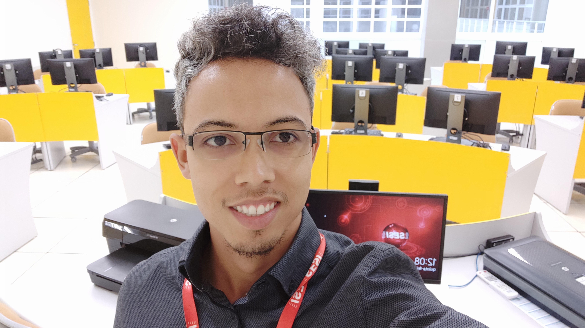
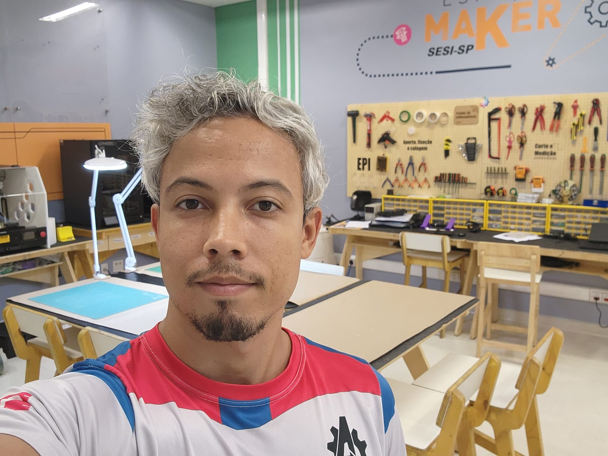
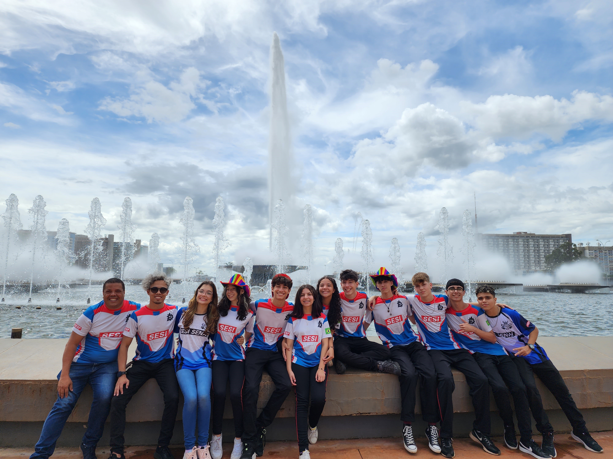
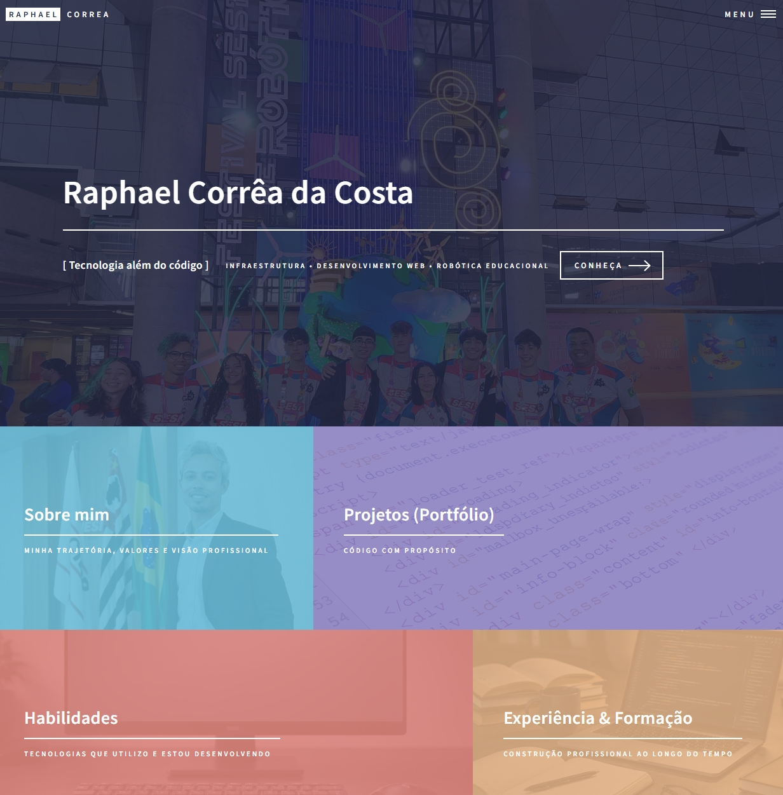

Soluções desenvolvidas a partir da integração entre infraestrutura, desenvolvimento e tecnologia aplicada.
Aplicação Prática da Tecnologia
Cada projeto apresentado aqui representa a aplicação prática da minha trajetória profissional.
Busco integrar infraestrutura, desenvolvimento e organização estratégica para construir soluções consistentes e funcionais.
Mais do que executar tarefas técnicas, procuro estruturar processos e gerar impacto real por meio da tecnologia.

Gestão
Infraestrutura Tecnológica Educacional
Contexto
Responsável pela gestão integral dos ambientes tecnológicos da unidade educacional, incluindo laboratórios de informática, equipamentos administrativos e infraestrutura de rede.
Desafios
Ambientes heterogêneos, necessidade de padronização constante, controle de laboratórios e otimização de processos repetitivos.
Atuação
Manutenção preventiva e corretiva de equipamentos, criação e padronização de imagens de sistema operacional, automação por meio de scripts e implementação do Veyon para gerenciamento estruturado dos laboratórios.
Impacto
Redução de tempo em configurações, maior controle operacional, estabilidade dos ambientes e suporte mais eficiente ao processo pedagógico.

Estruturação e Gestão
Espaço Maker Educacional
Contexto
Responsável pela organização, operação e suporte técnico do Espaço Maker da unidade, ambiente voltado ao desenvolvimento de projetos práticos, prototipagem e cultura de inovação.
Desafios
Garantir operação segura e eficiente de equipamentos tecnológicos, orientar alunos e professores no uso adequado das ferramentas e estruturar o ambiente para apoiar projetos interdisciplinares.
Atuação
Operação e manutenção de impressoras 3D, corte a laser, plotter, fresadora, braço robótico e ferramentas de prototipagem. Orientação técnica a alunos e professores na criação de projetos e protótipos, promovendo integração entre tecnologia, criatividade e aprendizagem prática.
Impacto
Ampliação do uso pedagógico do espaço maker, maior autonomia dos alunos na prototipagem de soluções e fortalecimento da cultura de inovação na unidade.
Tecnologias e Equipamentos
Impressoras 3D • Corte a Laser • Plotter • Fresadora • Braço Robótico • Ferramentas Maker

Mentoria e Desenvolvimento
Equipe de Robótica Educacional
Contexto
Atuação como técnico de equipe de robótica educacional, integrando programação, design de robô e estratégia de competição.
Desafios da equipe
Estruturar planejamento técnico, organizar divisão de responsabilidades, desenvolver soluções eficientes e preparar para desafios regionais e nacionais.
Atuação
Orientação quanto ao desenvolvimento: construção mecânica, programação do robô, organização estratégica do projeto e no desenvolvimento de competências técnicas e socioemocionais.
Resultados
1º lugar em Design do Robô na etapa regional e classificação para etapa nacional. Fortalecimento do trabalho em equipe, pensamento lógico e capacidade de resolução de problemas.
Competências Desenvolvidas
Programação • Estratégia Técnica • Liderança • Planejamento • Trabalho em Equipe

Projeto Técnico
Desenvolvimento do Portfólio Web
Contexto
Desenvolvimento de um portfólio profissional com o objetivo de estruturar minha identidade digital e consolidar minhas áreas de atuação em infraestrutura tecnológica, robótica educacional e desenvolvimento web.
Desafios
- Definição da arquitetura da informação
- Organização estratégica do conteúdo profissional
- Customização visual mantendo identidade própria
- Garantir responsividade e boa experiência do usuário
Atuação Técnica
- Estruturação semântica utilizando HTML5
- Customização do template base (HTML5 UP – Forty)
- Aplicação de CSS para ajustes visuais e identidade própria
- Tratamento e otimização de imagens
- Implementação de efeitos visuais (overlay, hover e responsividade)
Diferencial
Projeto desenvolvido com foco em clareza de comunicação, posicionamento estratégico e organização sistêmica da informação, refletindo minha visão integrada de tecnologia.
Competências Desenvolvidas
HTML5 • CSS3 • Arquitetura de Informação • UI/UX • Estruturação de Conteúdo • Identidade Digital
Construindo soluções com base sólida
Cada projeto representa a aplicação prática do conhecimento técnico aliado à organização, visão sistêmica e foco em resultados.